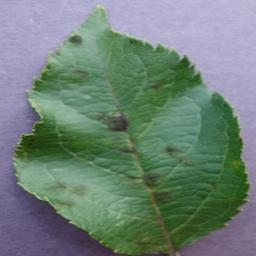

Monday, October 14, 2024
Good morning, Alex ✦
Let’s keep your tomato plants thriving today.
24° CSunny · Good for growing
Plants being monitored24 plants↑ 8% from last month
Total scans68 scans12 this month
Healthy plants21 of 2487.5% in good health
Needs attention3 plantsReview recommended
Plant doctor
What’s happening
with your plant?
01 / 03
Drop a photo of your tomato leaf here
We’ll look for signs of disease in seconds
JPG, PNG or WEBP · Max 10 MBTry a sample scanLocal reference photos
Your photos stay private and are never shared.
Stay informed
Recent activity
Plant scan completedGreenhouse A · 2 hours ago
Healthy→Follow-up recommendedRaised bed 02 · Yesterday
Review→Care guide completedPreventing leaf spot · Oct 10
Done→Follow-up recommendedFruit late blight · Greenhouse B · 3 hours ago
Action due→Prevention reminder scheduledBlossom-end rot · Raised bed 02 · Tomorrow
Planned→Crop specialist contactedYellow leaf curl · Greenhouse A · Oct 12
Replied→New reference data addedTomato fruit conditions · Today
Updated→This week’s care tip
Keep leaves dry to prevent fungal disease
Water at the base in the morning and leave space between plants for airflow.
Know the signs
Plant disease library

People who can help